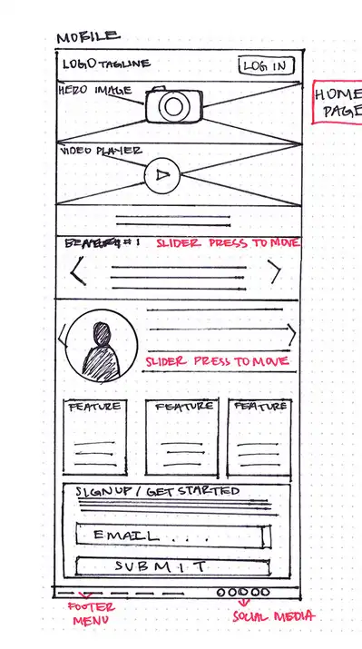
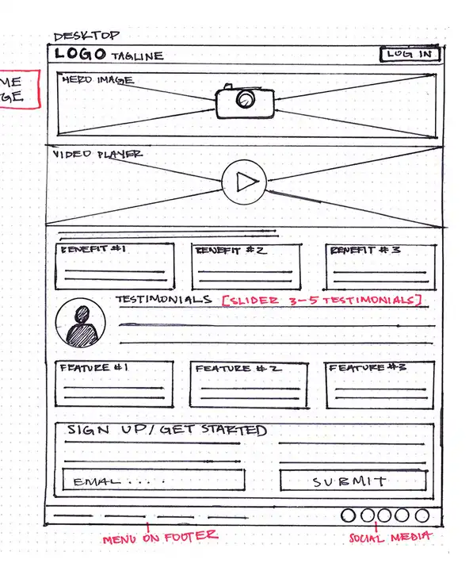

Site Name: My Digital Portfolio
Reason for Selection: The name is simple, descriptive, and aligns with the purpose of showcasing my web development skills and projects professionally.
The purpose of this site is to showcase my skills, projects, and achievements in web development. It will provide potential clients and employers with a clear understanding of my expertise, career journey, and the ability to contact me for collaborations or job opportunities.
Mobile View:
Desktop View:
The applied CSS follows W3C validation rules. It uses the specified color schema and typography to ensure compliance and consistency across the site.